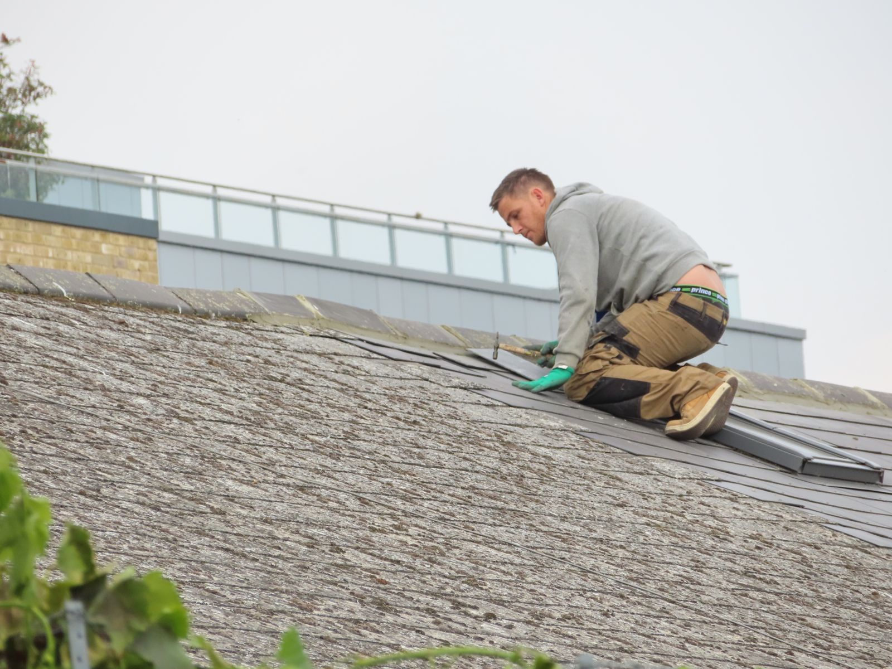
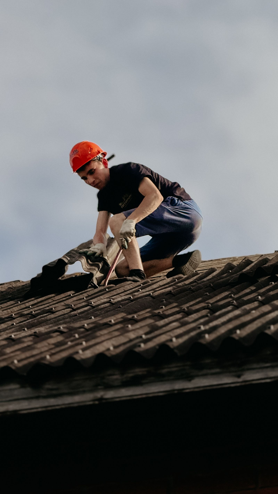

Roofing contractor · Bryan, TX · Est. 1975
Fifty years. Same family, same roof, twice.
Lopez Roofing, run by Raul Lopez, has been re-roofing Bryan homes since 1975. One customer had Lopez replace their roof after the 2016 tornado — and called them back to do it again after a recent hailstorm. That's the kind of trust a 50-year record buys.

Fifty years, two storms
A record built one roof at a time
1975
Raul Lopez starts Lopez Roofing in Bryan, TX.
2016 tornado
Lopez Roofing replaces a customer's roof after tornado damage — per a real, named Google review.
Recent hailstorm
The same customer calls Lopez back to re-roof again after a hailstorm — also per that same review.
50 years, BBB A+
Still family-run, still BBB A+ accredited, still a perfect 5.0 on Google.
Timeline built from Lopez Roofing's own public Google Business listing and a real, named customer review, verified 2026-09-05 — see README for the exact source.
What we cover
Roof replacement, repair & storm damage
General categories of roofing work — confirm your exact job by phone.
Full roof replacement
Tear-off and re-roof, the core of a 50-year track record.
Storm & hail damage repair
Repairs and full replacements after Central Texas storms.
Tornado damage repair
Real experience with storm-scale roof damage, not just routine wear.
Roof leak repair
Finding and fixing the source of an active leak.
Shingle & composition roofing
The most common residential roof type in the area, installed right.
Roof inspections & estimates
A real look at the roof before you decide anything.
These are general categories of roofing work — call (979) 823-0825 to confirm Lopez Roofing can handle your exact job.

About Lopez Roofing
Run by Raul Lopez since 1975
Lopez Roofing is a Bryan roofing contractor founded by Raul Lopez in 1975 — 50 years in business. It's BBB A+ accredited, and its Google reviews describe a company that shows up when it says it will: one reviewer called them "the best" after "horrible luck with roofers in the past," and another specifically praised how informative the crew was on-site.
Business details on this page come from Lopez Roofing's public Google Business listing and its public reviews, verified 2026-09-05.
On Google
A repeat customer, in their own words
Real, named reviews from Lopez Roofing's public Google listing — quoted directly, nothing invented:
“Sending out thanks to Lopez Roofing. They replaced our roof after the tornado in 2016 and just replaced it again due to hail storm last month.” — Margaret Reynolds, Google review
“We have had horrible luck with roofers in the past, but these guys were the best!” — J. Pate, Google review
5.0 rating · 8 reviews, both quotes verbatim from Lopez Roofing’s public Google Maps listing — verified 2026-09-05.
Hours
Google's listing shows the business opening at 7:30 AM — call to confirm hours for your day, verified 2026-09-05.
Call to scheduleGet in touch
Storm damage, or just a roof that's due?
Call Raul and get a real look at the roof, from a company that's been doing this since 1975.
Call (979) 823-0825